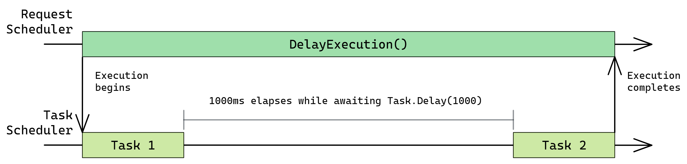
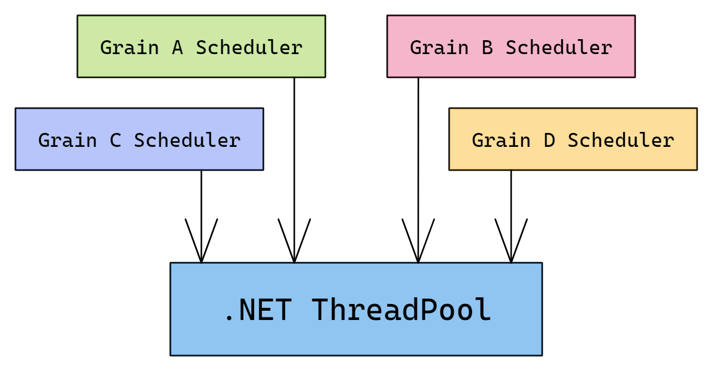
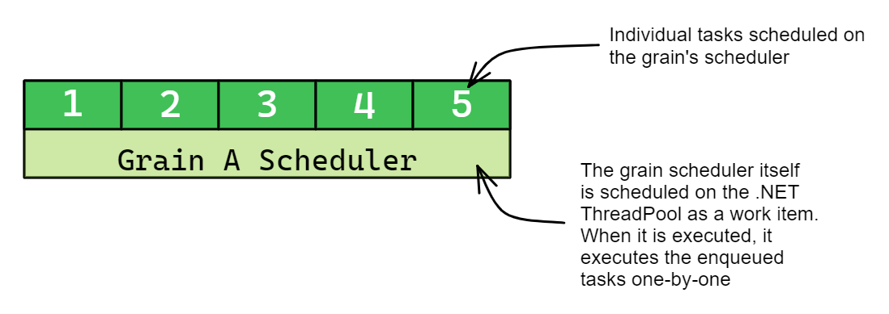
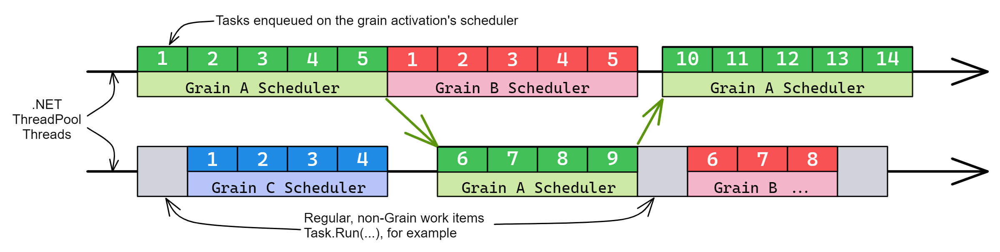

Scheduling
There are two forms of scheduling in Orleans which are relevant to grains:
- Request scheduling, the scheduling of incoming grain calls for execution according to scheduling rules discussed in Reentrancy
- Task scheduling, the scheduling of synchronous blocks of code to be executed in a single-threaded manner
All grain code is executed on the grain's task scheduler, which means that requests are also executed on the grain's task scheduler. Even if the request scheduling rules allow multiple requests to execute concurrently, they will not execute in parallel because the grain's task scheduler always executes tasks one-by-one and hence never executes multiple tasks in parallel.
Task scheduling
To better understand scheduling, consider the following grain, MyGrain, which has a method called DelayExecution() which logs a message, waits some time, then logs another message before returning.
public interface IMyGrain : IGrain
{
public Task DelayExecution();
}
public class MyGrain : Grain, IMyGrain
{
private readonly ILogger<MyGrain> _logger;
public MyGrain(ILogger<MyGrain> logger) => _logger = logger;
public async Task DelayExecution()
{
_logger.LogInformation("Executing first task");
await Task.Delay(1000);
_logger.LogInformation("Executing second task");
}
}
When this method is executed, the method body will be executed in two parts:
- The first
_logger.LogInformation(...)call and the call toTask.Delay(1000) - The second
_logger.LogInformation(...)call
The second task will not be scheduled on the grain's task scheduler until the Task.Delay(1000) call completes, at which point it will schedule the continuation of the grain method.
Here is a graphical representation of how a request is scheduled and executed as two tasks:

Note that the above description is not specific to Orleans and is instead how task scheduling in .NET works: asynchronous methods in C# are converted into an asynchronous state machine by the compiler and execution progresses through the asynchronous state machine in discrete steps.
Each step is scheduled on the current TaskScheduler (accessed via TaskScheduler.Current, defaulting to TaskScheduler.Default) or the current SynchronizationContext.
If a TaskScheduler is being used, each step in the method is represented by a Task instance which is passed to that TaskScheduler.
Therefore, a Task in .NET can represent two conceptual things:
- An asynchronous operation which can be waited on. The execution of the
DelayExecution()method above is represented by aTaskwhich can be awaited. - A synchronous block of work. Each stage within the
DelayExecution()method above is represented by aTask.
When TaskScheduler.Default is in use, continuations are scheduled directly onto the .NET ThreadPool and are not wrapped in a Task object.
The wrapping of continuations in Task instances occurs transparently and therefore developers rarely need to be aware of these implementation details.
Task scheduling in Orleans
Each grain activation has its own TaskScheduler instance which is responsible for enforcing the single threaded execution model of grains.
Internally, this TaskScheduler is implemented via ActivationTaskScheduler and WorkItemGroup.
WorkItemGroup keeps enqueued tasks in a Queue<Task> internally and implements IThreadPoolWorkItem.
In order to execute each currently enqueued Task, WorkItemGroup schedules itself on the .NET ThreadPool. When the .NET ThreadPool invokes the WorkItemGroup's IThreadPoolWorkItem.Execute() method, the WorkItemGroup executes the enqueued Task instances one-by-one.
Each grain has a scheduler which executes by scheduling itself on the .NET ThreadPool:

Each scheduler contains a queue of tasks:

The .NET ThreadPool executes each work item enqueued to it. This includes grain schedulers as well as other work items, such as work items scheduled via Task.Run(...):

Note that a grain's scheduler can only execute on one thread at a time, but it does not always execute on the same thread. The .NET ThreadPool is free to use a different thread each time the grain's scheduler is executed. The grain's scheduler is responsible for making sure that it only executes on one thread at a time and this is how the single threaded execution model of grains is implemented.